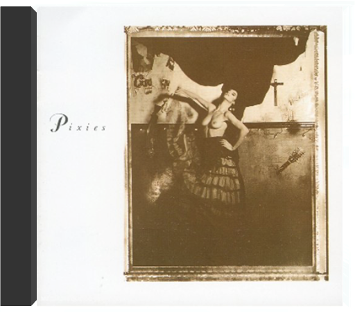

Meilleur disque seventies sorti en 2000, United consacre ce groupe parisien roi des radios FM californiennes durant la fin des années 70 et le début des années 80, tant ces influences sont ici présentes et bien digérées. Phoenix brille donc de mille feux sur la pop/rock française, non loin de ses amis de Air avec qui la formation partage cet amour des sections rythmiques groovy d'antan tout comme une passion pour les synthés vintage. Le single "Too Young" ici présent est un chef-d'oeuvre de précision et de concision musicale, les harmonies vocales appartenant également au meilleur de la pop de jadis. Grande classe. —Florent Mazzoleni  Il aura fallu attendre quatre ans pour que les quatre jeunes oiseaux rassemblés sous le nom de Phoenix donnent une suite au prometteur United, sorti en 2000. Quatre ans pour renaître des cendres d’une première tournée internationale qui a visiblement donné des ailes à ce groupe de post-ados, dont les arrangements minutieux, les textes élaborés et les gimmicks stylés dénotent une étonnante maturité. Ce second album creuse la brèche "funky time" ouverte avec United, en évitant toutefois les digressions hard-rock-FM des débuts, ce qui leur permet d’assurer ce coup-ci un album homogène, qui tient de bout en bout son sens du groove efficace sans être facile, accrocheur sans être racoleur. Si le son pop-funk domine l’apparente simplicité de leurs chansons, la rencontre intempestive d’une guitare folk ("Run Run Run"), de rythmiques en contrepoint ("I’m An Actor") et de puissantes lignes de basse n’excluent pas une certaine audace dans l’architecture par ailleurs plutôt classique des morceaux. Avec Alphabetical, vous tenez peut-être l’album que les Daft Punk auraient produit s’ils s’étaient mis à fricoter avec Jamiroquaï plutôt qu’avec Albator… —Stéphanie Lopez |  surfer rosapixies Le disque qui enterre le rock 80’s sagement calibré et annonce ce que sera le futur de cette musique de jeunes Blancs : audacieusement déstructuré mais hautement fredonnable. Produit par Steve Albini (Big Black), Surfer Rosa marie la sauvagerie du punk-rock aux rondeurs de la pop la plus mélodique, fidèle au précepte grand écart que le groupe de Boston s’est imposé, quelque part entre Peter, Paul & Mary et Hüsker Dü. Ce CD réunit en fait le premier vrai album du groupe (Surfer Rosa, 1988) et le mini-album qui l’avait précédé (Come On Pilgrim, 1987), composé de huit chansons dans lesquelles le style très particulier des Lutins commence à s’esquisser. Cavalcades effrénées, lévitations sur planches de surf volantes, paroles énigmatiques sous influence surréaliste et parfum post-New Wave (Boston est la ville américaine la plus anglaise, a-t-on coutume de dire) : Black Francis, rebaptisé plus tard Frank Black, et ses trois artificiers ne connaissent aucune limite. L’avenir leur donnera raison. —José Guerreiro  Stripped-back 2015 live set performing their best-loved songs with guests Broken Twin & Joan Wasser aka Joan As Police Woman.  C'est autour de goûts en commun que les membres de ce groupe de Fontainebleau se sont retrouvés. Des choses globalement hard et heavy, classiques même, qui vont de Soundgarden à Smashing Pumpkins en passant par Faith No More et Rage Against The Machine. Autant le dire tout de go : Episode 2 : Medecine Cake secoue sévèrement, ses morceaux puissamment charpentés puisant également aux sources du rap hardcore et du death. Soit du néo-metal que l'on aura tout loisir de comparer aux grands frères de Slipknot et Linkin Park ! Que du bon donc, superbement produit par Fabrice Leyni (NTM), avec des guests efficaces pêchés du côté de l'alternatif hexagonal le plus pointu (Wünjo, Watcha et Stereotypical Working Class). "Tank Club" installe d'emblée une ambiance lourde garnie de samples digérés par des machines à la hauteur du débit de Mark Kemar, leur (d)étonnant chanteur (la voix est quasiment envisagée comme un instrument à part entière). Tonitruant, "United Nowhere" montre la marche à suivre et prouve que Pleymo n'a d'ores et déjà plus grand-chose, sinon rien, à envier aux meilleurs groupes de fusion, qu'il s'agisse de Primus ou de Korn. Rythmiques d'enfer, riffs plombés et énergie colossale : une recette simple comme bonjour dont ils sont à la hauteur ! —Hervé Comte |

Julien
Collection Total:
1 912 Items
1 912 Items
Last Updated:
Dec 19, 2021
Dec 19, 2021


 Made with Delicious Library
Made with Delicious Library